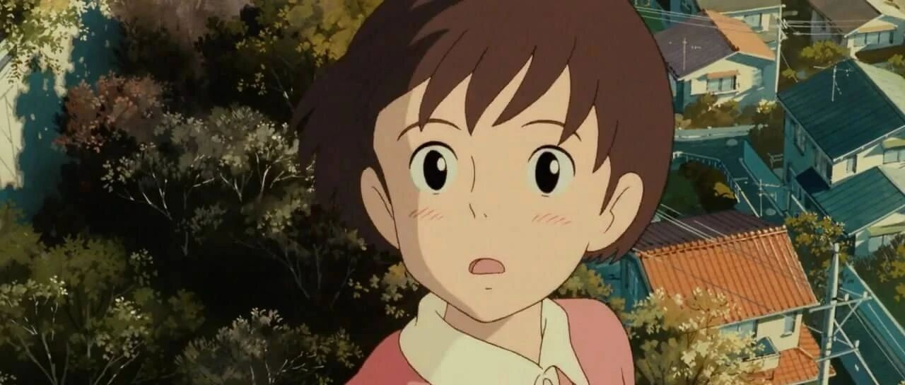

一起存钱｜毕业一年存10万，爽翻了！


点击关注秋秋很开心
每周一篇学习成长、退休干货

图：@网络
文：@秋秋
大家好，我是秋秋呀～
回看我的整个存钱fire生涯，到100万的时候固然欣喜，但大学毕业一年后就存下了10万，才是真的爽翻了！
今天就聊聊我存第一个10万的小经验，诸君切忌削足适履，择益处而吸取之～

我就想攒钱：
我是高中认识了大老王，22岁大学毕业时，多年的感情让我在 谈恋爱这种小事上 已然没什么好分心的。
困扰我的只有一个难题，研究生一年1万的学费怎么赚。
6月未开学我就去北京打工了，也是第一次体会到成年人的辛苦。
7000的工资去掉1500房租，1500吃喝，辛苦三个月存下1万块，转眼交了学费又没什么余粮了。
好多人会觉得7000工资不少，每月1500的房应该也不错。实际上这边服务员大都5000/月工资以上，房租3000/月，只能租个次卧（北四环）。
1500/月是我和好朋友像在宿舍一样，两人住一间次卧的价格。
我是背后没有靠山心里也没托底的人，交完学费也没生活费，大三家里破产后唯有自己养活自己。
那就独自去面对吧！存钱，目的干脆！
一切也奖赏了我这个想赚钱的人。
研究生课业不忙，我找了新工作月薪1万以上，暑假的工作还让我线上供稿，一个月5000。
花的不多，毕业一年后，我存下了10万。
这不算经验：
这段经历不可能去复制，我只能分析原因。因子可以重现：
（1）我真的热爱
是爱钱、需要钱、也热爱创作这件事。
这些东西让我目的明确，我喜欢创作，只找和写作剪辑有关的事，我在这上面提升本领，是想好好存钱。
（2）我比较擅长
谁都会有一颗想赚钱的心，归根结底还是有没有与之匹配的"价值"。
5000的副业工作量是一样的，坐班7000、线上实际公司还省了2000，我还能保证质量和效率就是被认可的体现，也算是擅长吧。
后面我也做过其他兼职，用boss直聘找线上剪辑写稿这种，300-500一条视频，对方愿意采买，也是擅长的体现。
当然，后来我成为博主，才明白一个人能策划、写作、剪辑、排版、变现都（一个人等于一个团队），她赚的就会比正常工资多。
（3）我可能节省
赚多赚少是能力，每个月存多少各凭本事。
我那时不觉得合租、没钱出去玩、不能常常吃好吃的是多么辛苦的事，反而一点点甜就开心好久。
有动力有目标，还乐在其中。
现在回看，当时肯定是节省的，这也是能把钱存下的原因。
回看存到10万的过程，会心疼、会惊讶当时的自己。
这10万块是饱含着坚韧的，但当时的我只感觉美好。
我记得那年的常态是晚上6点下班，7点学校上课，公司到学校1小时的路程。
我来不及吃饭就站上公交车，一路颠簸拥挤，下了车因为饥饿呕吐。
上课还经常会面临迟到的风险，被老师误解这是一个不爱学习的懒学生😭
可我总会整理好状态，大步向前，开心我还能有上课听讲的机会…….
原创文章，转载请告知本人并标注来源
粉丝微信：qiuqiu5261
（朋友圈更新日常）
喜欢记得星标，让我们一起成长